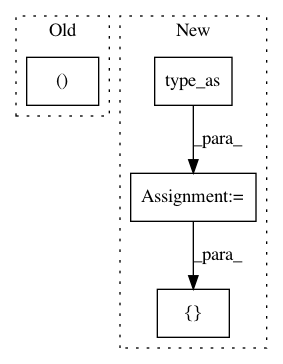

9b664bd7cd8dbb9657626166ba61887ed06774d7,gpytorch/utils/toeplitz.py,,index_coef_to_sparse,#Any#Any#Any#,6
Before Change
if value_matrix[i, j] == 0:
continue
index_list[0].append(i)
index_list[1].append(index_matrix[i, j])
value_list.append(value_matrix[i, j])
index_tensor = torch.LongTensor(index_list)
After Change
num_target_points, num_coefficients = value_matrix.size()
row_tensor = torch.arange(0, num_target_points).unsqueeze(1)
row_tensor = row_tensor.repeat(1, num_coefficients).type_as(index_matrix)
index_tensor = torch.cat([row_tensor.view(1, -1), index_matrix.view(1, -1)], 0)
value_tensor = value_matrix.view(-1)
nonzero_indices = value_tensor.nonzero()
In pattern: SUPERPATTERN
Frequency: 3
Non-data size: 4
Instances
Project Name: cornellius-gp/gpytorch
Commit Name: 9b664bd7cd8dbb9657626166ba61887ed06774d7
Time: 2017-09-13
Author: gpleiss@gmail.com
File Name: gpytorch/utils/toeplitz.py
Class Name:
Method Name: index_coef_to_sparse
Project Name: rusty1s/pytorch_geometric
Commit Name: 51b53dcbab8ec7ab0b6e8a64284a919db2d2254a
Time: 2018-05-08
Author: matthias.fey@tu-dortmund.de
File Name: torch_geometric/transform/local_cartesian.py
Class Name: LocalCartesian
Method Name: __call__
Project Name: rusty1s/pytorch_geometric
Commit Name: 5e4bcd2876408cc4fabfaee595928306f90f555d
Time: 2018-05-07
Author: matthias.fey@tu-dortmund.de
File Name: torch_geometric/transform/target_indegree.py
Class Name: TargetIndegree
Method Name: __call__